Oracle服务器、Oracle客户端、PLSQL Developer
1、区分三个软件系统
关键字：138.138.2.240:1521/esbdb
区分Oracle数据库中的三个软件系统:
Oracle服务器：Oracle 11g，真正需要安装的Oracle Server。
Oracle客户端：Oracle的客户端。
PL/SQL Developer第三方工具：用于连接Oracle Server，并进行各种SQL操作的第三方工具。
2、安装Oracle服务器
参考Window系统下安装Oracle服务器和Linux系统下安装Oracle服务器的文档说明；
3、 安装Oracle客户端
1. 说明
不论是本机Windows系统下安装的Oracle服务器还是远程或者虚拟机的Linux系统下安装的Oracle服务器，只要本机想要访问Oracle服务器，就必须安装Oracle客户端。
2. 找到本地Oracle客户端的安装程序，双击进行安装
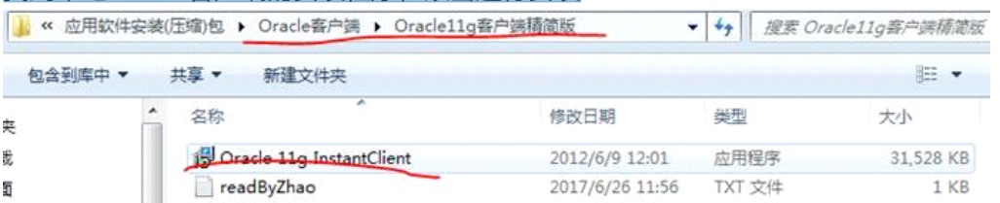
3. 一路“下一步”进行安装，选择本地安装目录
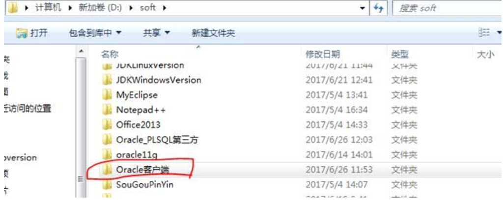
4. 安装好后如下图所示
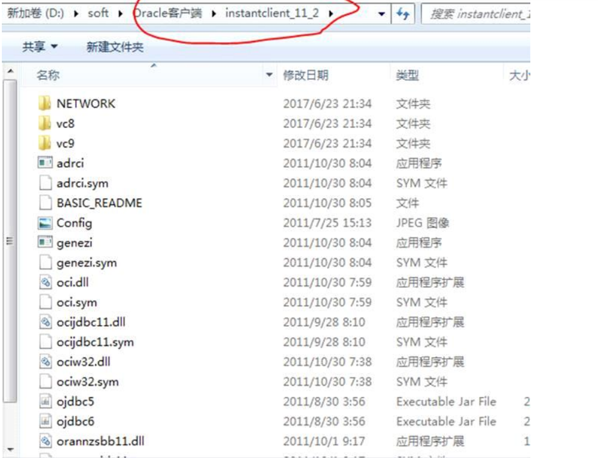
5. 修改客户端网络服务配置文件
目录为：D:\soft\application\OracleClient\instantclient_11_2\NETWORK\ADMIN
进入NETWORK/ADMIN目录下，找到文件tnsnames.ora打开并修改：
该文件是本地网络服务配置文件，一般用来配置客户端的，配置后此客户端就可以访问oracle服务器端。
总结：oracle服务器端需要配置listen这个监听文件，客户端需要配置tnsnames这个本地网络文件。
当然，不论是客户端还是服务器端都会存在这两个文件，就看客户端或者服务器端是要充当什么角色了，有时候客户端也能充当服务器端就需要配置listen，有时候服务器端也想充当客户端去访问其他的oracle服务器，那么也需要配置tnsnames这个文件
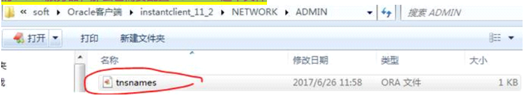
修改后的内容如下：
zhao = //zhao是为下列数据库实例esbkf1起的一个别名，用PL/SQL
(DESCRIPTION = //登录时访问
(ADDRESS = (PROTOCOL = TCP)(HOST = 10.17.1.92)(PORT = 1521)) //数据库服务器的Ip
(CONNECT_DATA =
(SERVER = DEDICATED)
(SERVICE_NAME = esbkf1) //esbkf1是Oracle Server端创建的数据库实例名
)
)
上述文件节点可以加多个数据库实例映射名，所以可以配置多个节点映射。
6. 修改完成后，保存该文件并关闭
7. 可能出现ORA-121541：TNS：无法解析指定的连接标识符 这个错误
当本文档的所有工作都做完后，使用PLSQL工具进行Oracle数据库的连接，出现上述错误.
解决办法，将本地客户端的网络配置文件，即上一步的tnsnames.ora文件中，所有数据库监听实例之间的首行都不要存在空格，多个监听节点之间不能存在空格，不能有空行存在，结构必须规范整齐即可解决上述问题。
4、 安装PL/SQL Developer
1. 说明
Oracle服务器软件和Oracle客户端软件是必须要安装的，但是要想友好的操作Oracle服务器端的各种操作，那么就需要安装PL/SQL第三方软件了，否则Oracle将没有一个友好的视图供用户操作，用户只能通过DOS或者XShell等命令行控制台去登陆Oracle服务器的sqlplus命令窗口去执行各种操作，这种方式很不友好。所以需要单独安装第三方的PLSQL工具。
2. 找到本地PL/SQL Developer的安装程序，双击进行安装
第一个是PL/SQL安装程序，第二个是中文包，分别双击安装，安装在同一个目录下：
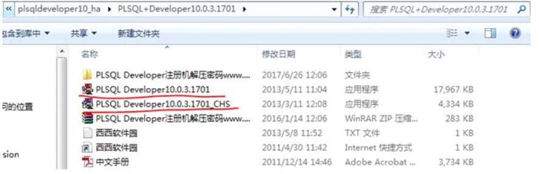
3. 一路“下一步”进行安装，选择本地安装目录
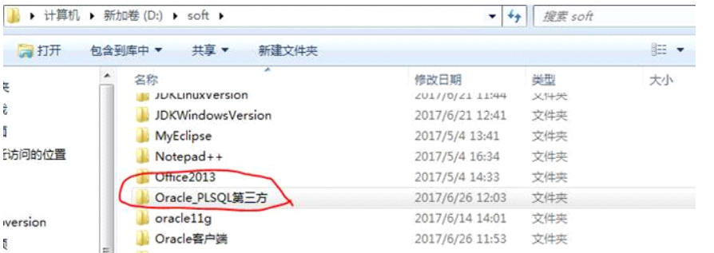
4. 安装好后如下图所示
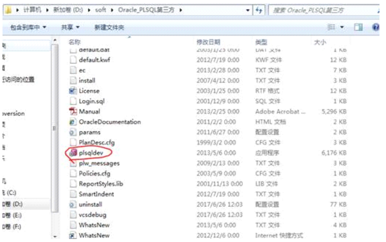
5. 配置环境变量TNS_ADMIN
变量名：TNS_ADMIN
变量值：D:\soft\OracleClient\instantclient_11_2\NETWORK\ADMIN
注意：变量值是指向tnsnames.ora文件的根目录
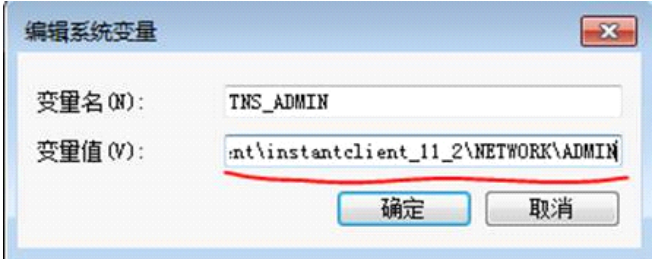
6. 配置环境变量path
修改path，追加OracleClient的安装根目录(oci.dll文件所在位置的根目录)
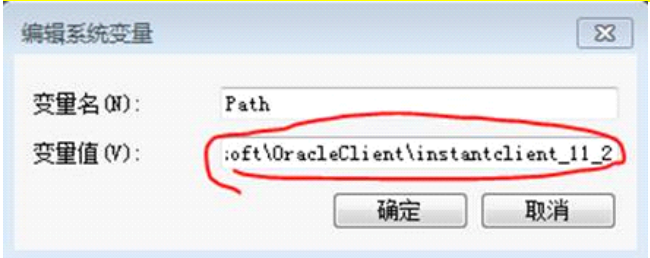
7. 配置中文环境变量
变量名：NLS_LANG
变量值：AMERICAN_AMERICA.AL32UTF8
或者：SIMPLIFIED CHINESE_CHINA.ZHS16GBK
上面的环境变量应该和oracle服务器的环境变量保持一致：
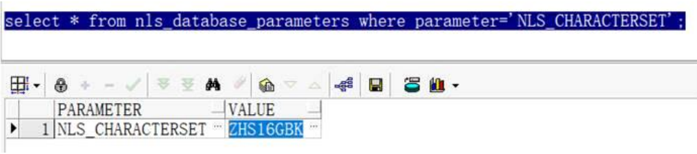
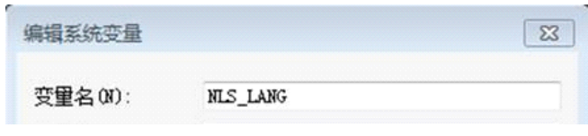
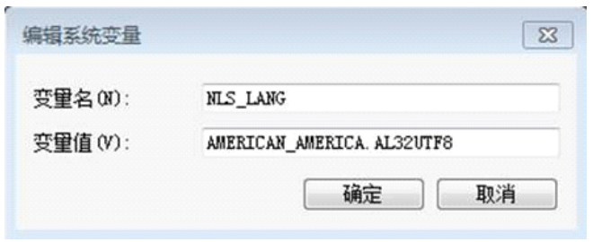
8. 双击plsqldev.exe应用程序打开pl/sql
5、 PLSQL基本操作
1. PLSQL介绍
PLSQL Developer是一个专门为Oracle数据库开发存储过程单元的一个集成环境，即针对于Oracle数据库的一个IDE。
2. 打开pl/sql应用程序连接Oracle服务器
Username：esbdata //安装Oracle11g Server时设置的用户名
Password：esbdata //安装Oracle11g Server时设置的密码【用于登陆Oracle服务器】
Database：zhao //安装Oracle客户端是自己配置的数据库实例别名
下拉后会出现OracleClient中tnsnames.ora文件中配置的各个数据库实例别名
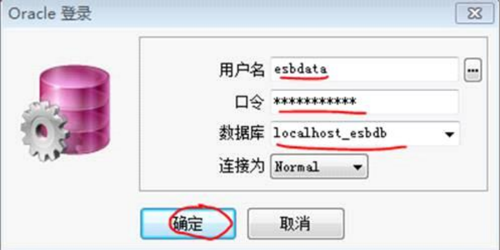
另一种不用配置网络服务文件tnsnames.ora的登录方式:
安装PLSQL后，可以不用配置本地客户端网络服务文件，即tnsnames.ora文件，如果不配置的话，则数据库选项下拉中没有配置的数据库实例的别名，这是想要连接按照下述方式连接：
138.138.2.240:1521/esbdb
ip:1521/数据库实例名
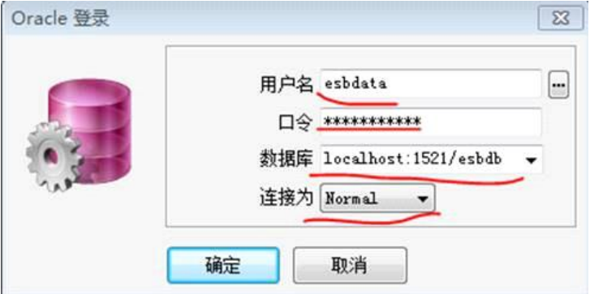
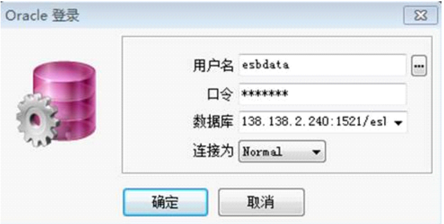
3. 用户名/密码保存功能设置
进入PL/SQL后
4. 查看当前连接oracle服务器的机器
选择工具-会话，可以看到当前连接该数据库服务器的所有客户端，包括连接的数据库用户名和连接的机器名。
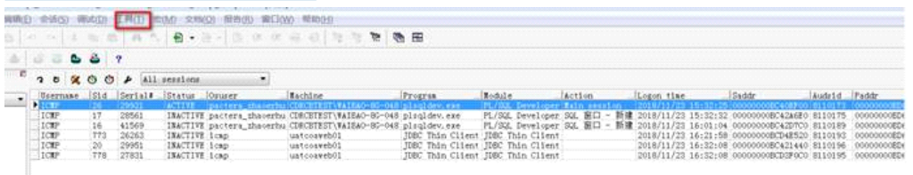
5. 切换数据库连接
点击下图的钥匙，则会重开一个登陆窗口。
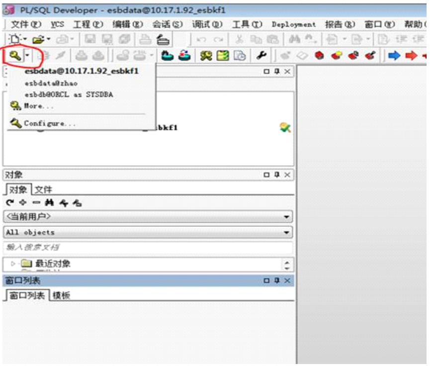
也可以选择登录历史记录中的某个连接，先断开当前连接，再选择其他连接右键选择连接即可：
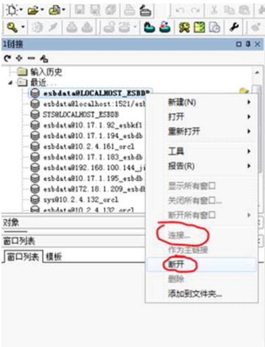
6、 PLSQL界面布局分析
1. 左侧的页面布局主要有三个对象：1链接、对象、窗口列表。
可以点击最大化、最小化、关闭按钮进行指定对象的操作
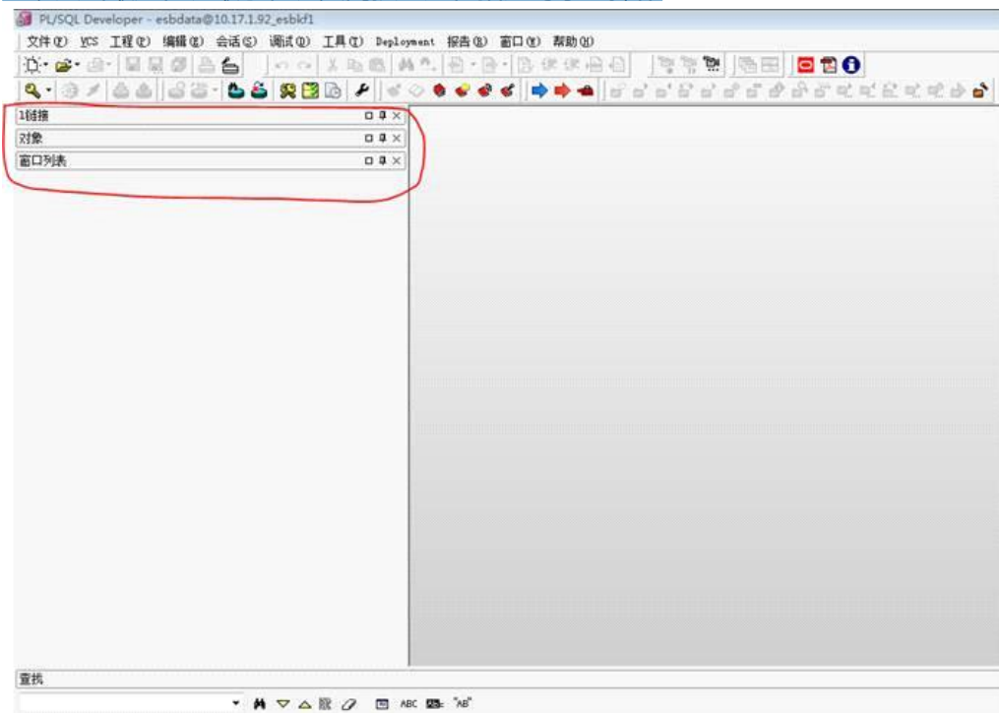
2. 链接：当前用户和历史用户链接
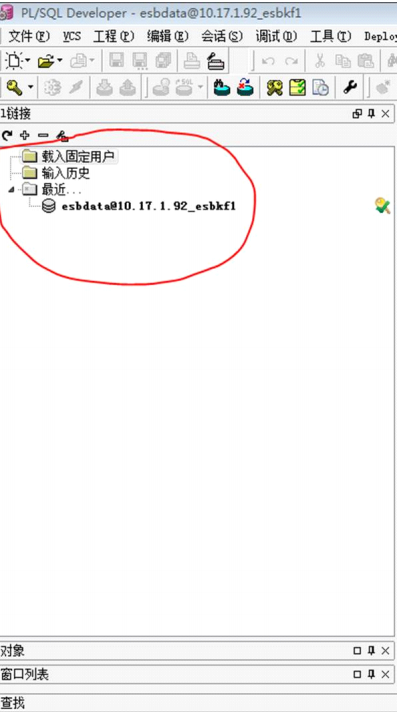
3. 对象：当前连接的数据库实例下的所有结构（视图、文件、索引、表等）
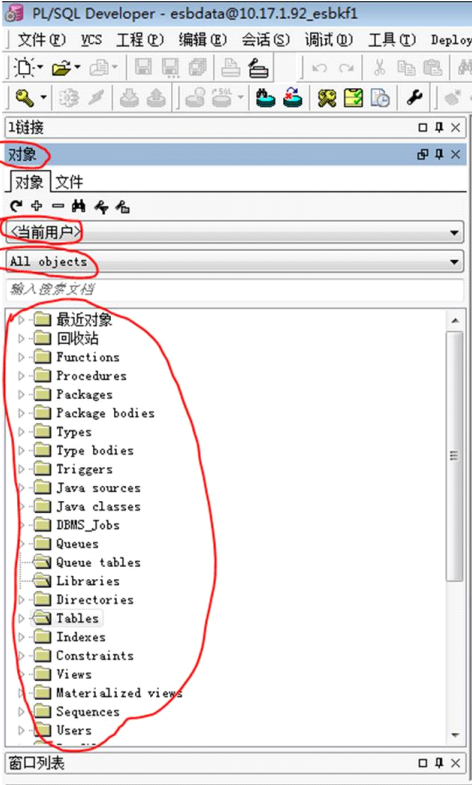
4. 窗口列表
7、 新建SQL可视化控制台窗口，编写SQL语句并执行
1. 新建SQL可视化控制台窗口
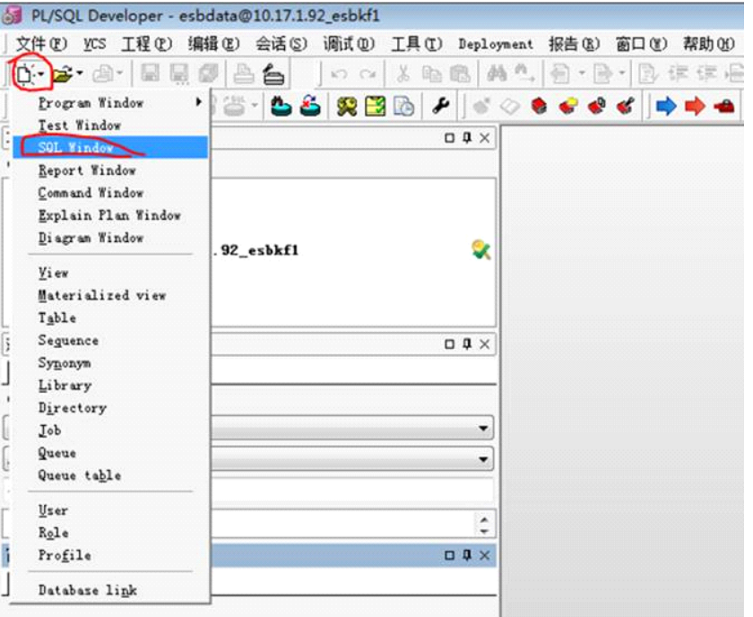
2. 编写SQL语句
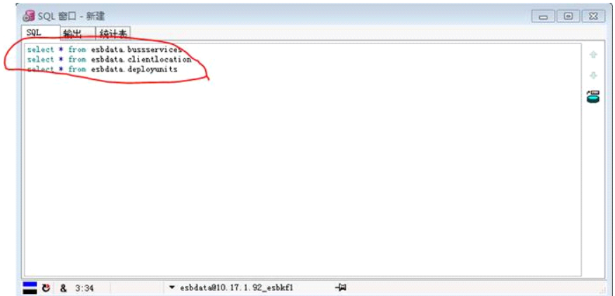
3. 执行SQL语句【选中要执行的语句，再执行，否则将执行所有SQL语句】
要想执行多条语句，则每一个sql语句需要使用;隔开
执行按钮的快捷键是F8
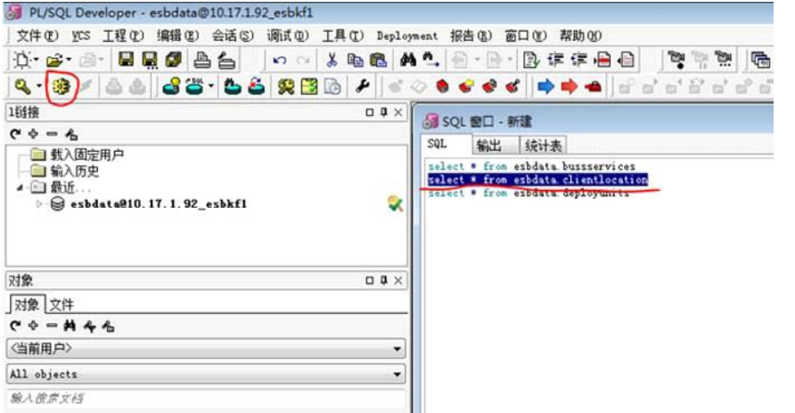
显示执行结果，点击下方绿色按钮，显示所有的执行结果：
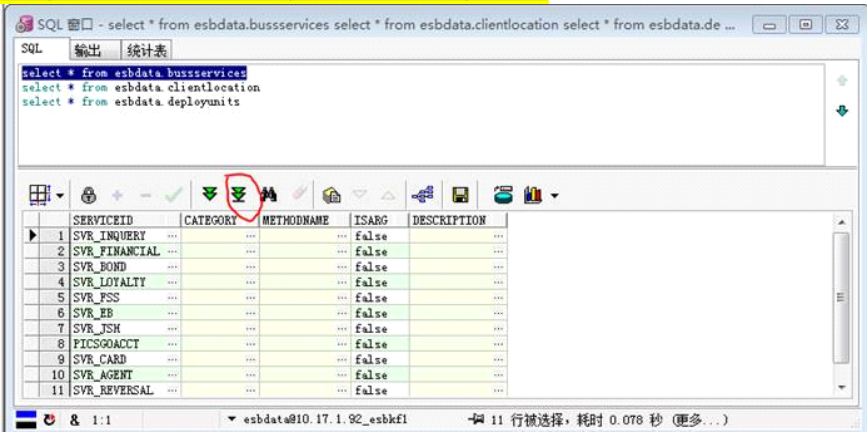
4. PLSQL执行完sql语句后进行事务提交
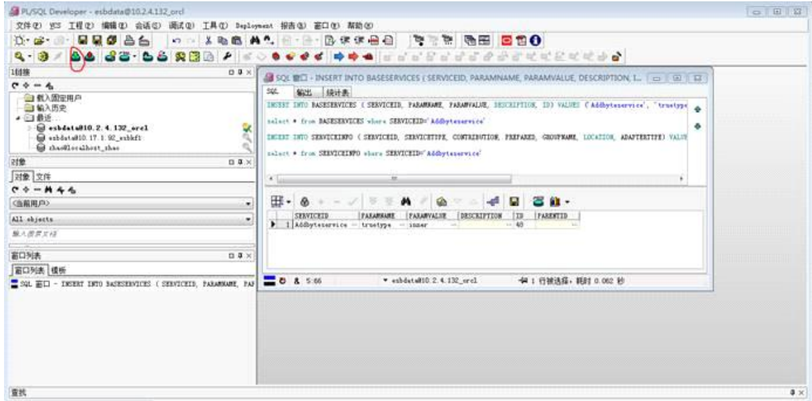
5. PLSQL中查看数据库表结构
找到对象Object下面的Tables，选择某一张表，右键选择查看，如下图，可以看到该表的结构信息：
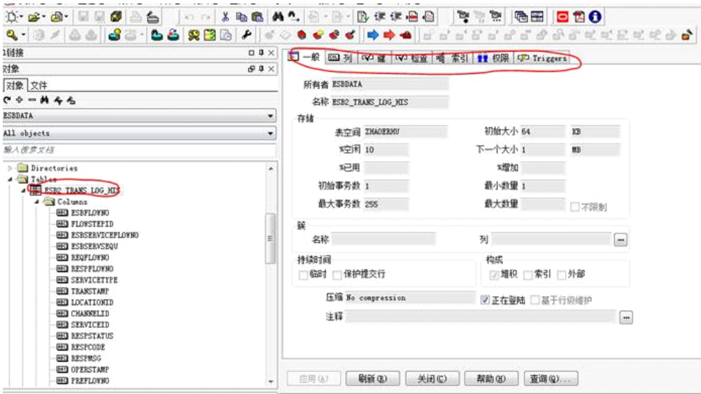
或者在写SQL语句的窗口里，按下ctrl键，然后点击某张存在的表，也会进入到上述查看表结构的视图中。
8、 新建SQL可视化控制台窗口，编写SQL语句并执行
1. 说明
*.dmp文件对于Oracle来说就是备份文件，Oracle中所有的表、视图、索引、过程、函数、触发器、包等块程序都能被导出为*.dmp文件，*.dmp文件主要就是用来备份数据库中的数据的，必要时倒入*.dmp文件可以用来恢复数据库；Oracle在sqlplus命令行控制台支持exp命令去导出为*.dmp，支持imp命令去导入*.dmp文件。
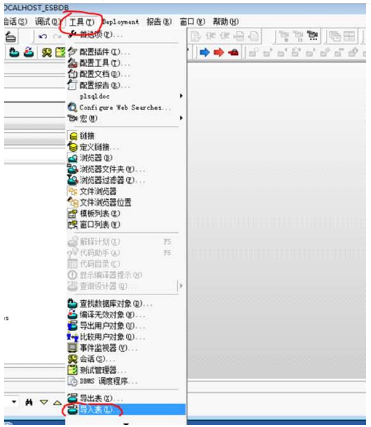
2. 可执行文件
选择imp.exe命令文件：D:\soft\oracle11g\app\zhaoeh\product\11.2.0\dbhome_1\bin\imp.exe
导入文件选择需要导入的dmp文件：C:\Users\zhaoeh\Desktop\esb2_trans_log_his.dmp
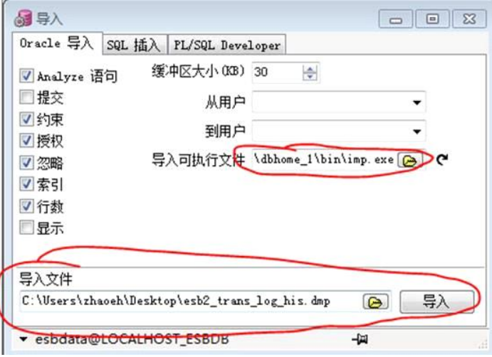
输入后点击右下方的导入按钮即可，等待dos窗口响应，响应自动退出
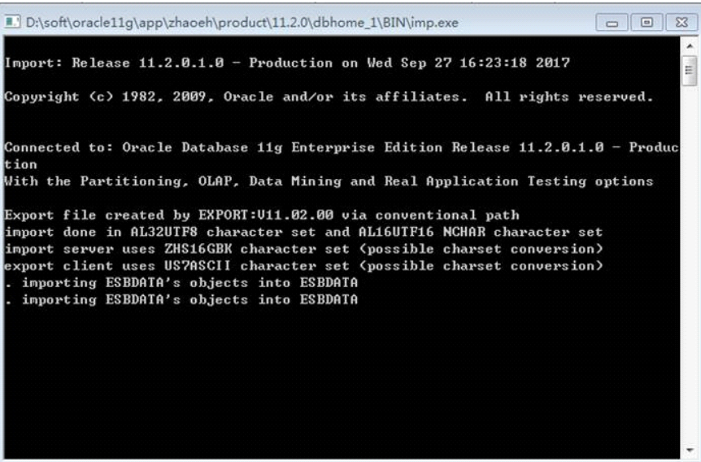
3. 查看
导入dmp文件的本质就是向库里面导入了一张表,在哪个用户下导入的，该dmp文件就会导入了哪个用户下的表中。
注意：在创建好数据库后，想要执行导入文件，必须首先创建表空间、用户和密码等。
比如上面导入的dmp文件是esb2_trans_log_his.dmp，则esbdata这个用户下的tables中就会存在一张名叫esb2_trans_log_his的表，如下图：
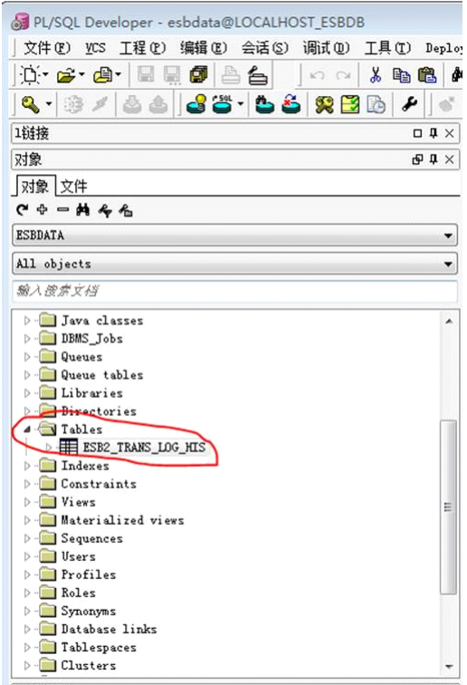
那么此时查看导入的dmp文件中的内容就是在查看这张表而已
9、 PLSQL执行pdc文件
1. oracle中，一般是通过*.pdc文件去调用*.sql文件去执行的。
文件->打开->Command File
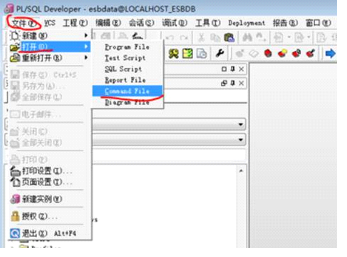
2. 选择自己需要执行的*.pdc文件
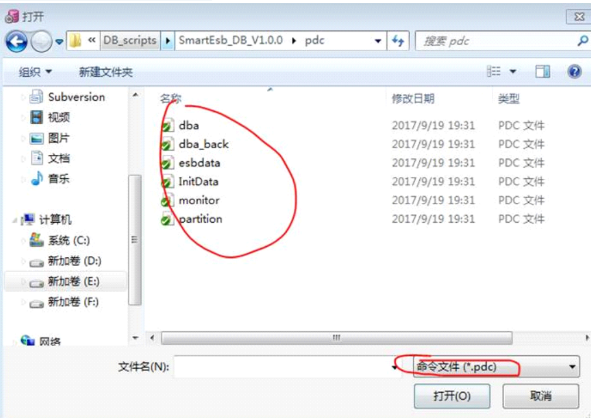
10、 PLSQL导出查询结果为文件
1. PLSQL支持任何形式的查询语句结果导出。
*执行查询语句(任何查询语句都可以，包括带where条件的查询)
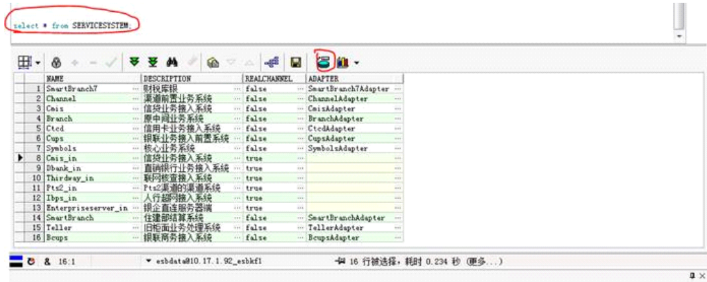
2. 查询结果可以保存成某种文件，如*.csv文件，*.tsv文件，*.sql文件等
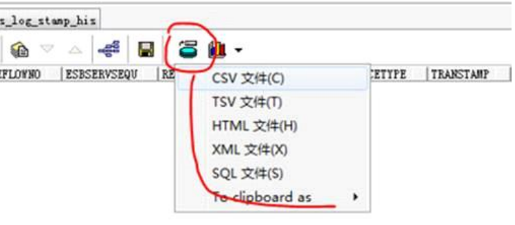
3. 保存后的*.sql文件中的内容如下：
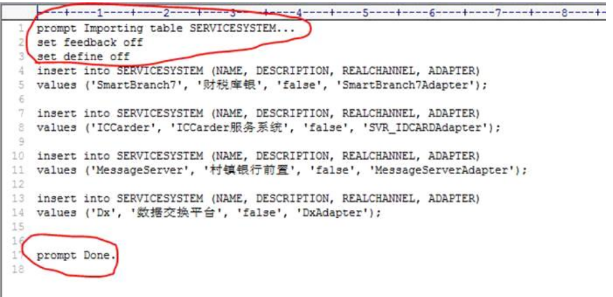
select 语句的查询结果导出来的sql语句全部是insert into语句，就是为了方便形成完整的sql语句以执行再次插入！
11、 PLSQL执行计划
输入指定sql。按下F5键，则显示当前sql的执行计划，即耗时，大小等。